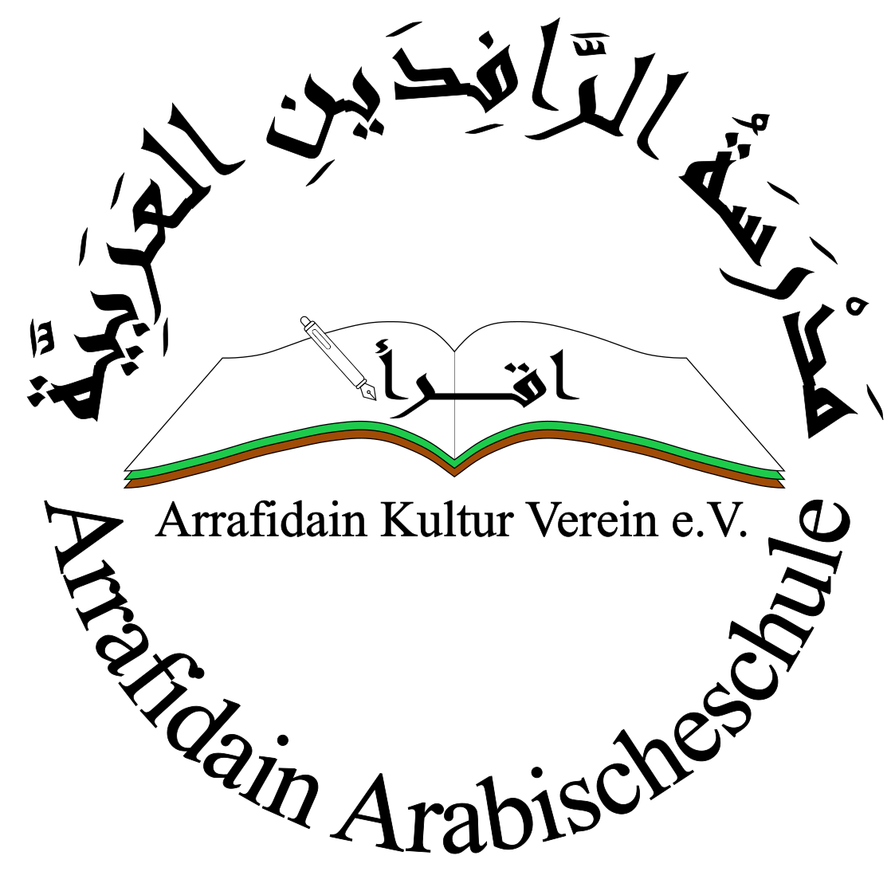

مَدْرَسَةُ الرَّافِدَينِ العَرَبِيَّة 
☰
الصفحة الرئيسية
الواجبات البيتية
عن المدرسة
معرض الصور
إعلانات
اتصل بنا
إعلان هام: التسجيل للعام الدراسي الجديد مفتوح الآن!
نادٍ ثقافي عربي تأسس عام ٢٠٠٥ في مدينة شتوتغارت بهدف تعليم الناشئة للغة العربية بمختلف علومها وفنونها
مرحباً بكم في مدرسة الرافدين العربية
هنا يمكنكم التعرف على المدرسة، أنشطتها، ومتابعة آخر الأخبار.